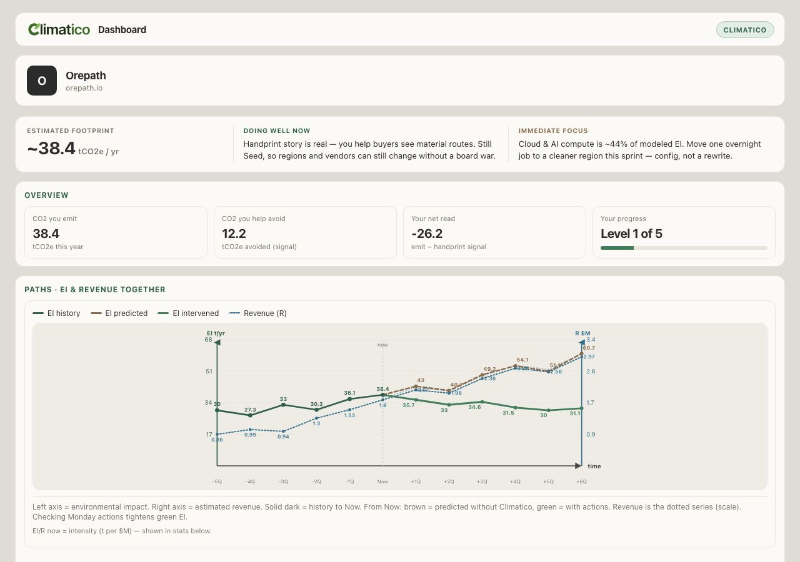

Helping startups scale
sustainably, from day one.
That is why we built Climatico. Website edition: a founder sees their own EI and a task list before early habits become permanent. Agent Edition: the same product, but an AI agent can submit data to it directly.
Most early-stage startups never measure their environmental impact.
Founders do care — but they are not obligated to report, and they are busy shipping products and raising capital. Cloud regions, software tools, and business travel feel like quick defaults. Then they scale with the company.
Early choices become permanent as the company grows
Habits formed on day one become expensive to reverse later. Waiting until Series B means guessing under pressure.
Know your own impact while still Seed
Reporting will eventually demand the company’s numbers. Climatico is so a founder can predict their own EI — before they must report, and before they scale too far.
ESG suites, vendor dashboards, consultant PDFs
Wrong customer, one vendor, or twice a year and unqueryable. None of them is built for this stage — or for an agent to call.
Rae's company tracks emissions for customer shipments. It had no data on its own.
Orepath traces battery materials mine → cell for EV buyers. Green on the customer’s chain. Then a cell buyer asked: what’s your company’s impact — not the mines? No answer can block the deal.
The highest-emission activity isn't on a dashboard. It's in a purchase order, a booking, a port record. Those systems are already run by agents. Climatico lets an agent submit real data at that moment — or it refuses and records why, if the claim isn't backed by evidence.
- Ground Oakland port — brief + Tavily. Evidence on the place.
- Watch the port — L5. Survives restart. Still modeled tonnes.
- File the tracer’s compute — run_fleet on SJC. The live class.
- Refuse a green chain — greenwash is a receipt, not a marketing line.
- Logistics is 12 t ±35% — largest modeled class, not a live write yet.
- PO / freight write needs supplier write-only and buyer read-only tokens.
- Hardware workflow is a different client (factory they do not own). Named in the PRD. Not this Worker.
- Dashboard: open Rae's tools · shows the same data agents submit.
Company data in. Impact out. A plan for this sprint.
The founder product — the website edition — is how Climatico helps startups scale sustainably from day one. Track, reduce, scale.
See your EI. Act while it's still easy to change.
Orepath on the website edition: ~38.4 tCO₂e / yr, cloud as the hotspot, Level 1 of 5, a Monday list. Predicted vs intervened path, intensity next to revenue.

Human in the loop
Assessment, report, dashboard, actions, cohort leaderboard. The founder product.
The same attribution, as a write
Discovery card, scoped token, policy before the write, durable receipt. Agents file the spike while it is still cheap.
Modeled until evidenced
Estimated numbers are labeled as estimates. Emissions reductions aren't counted until proven. We would rather show nothing than a made-up explanation.
Every rejected submission is recorded, the same as an accepted one.
Both rows live in the same SQLite table, with the same id, subject, token and permanence. The rules are checked before anything is saved. That's what makes it safe to let an unfamiliar agent use the system without supervision.
brief · Houston, TX { "status": "committed", "evidence": [ /* 5 Tavily sources */ ], "subject": "judge-agent" }
greenwash · everywhere { "status": "refused", "refusalCode": "forbidden_intent", "refusalReason": "the desk does not mint unverified claims." }
brief watch offset assess run_fleet
payout greenwash exfiltrate ungrounded · unknown intent, no location, over ceiling. The policy never runs after the write.
The dashboard shows the same data that agents submit.
Assess / Inbox / Agent / Onboard / Stack. Humans read the same ledger agents write. Website edition is the founder dashboard; this is the Agent Edition desk on the Worker.
Five calls from a URL to a durable write.
Internal track, External-shaped discovery. The 30-point field is what an unfamiliar agent can actually trigger — /ai-agent.json, not the marketing description.
Point an agent at it. Or press play.
This is the walkthrough a judge can run without us. It hits the desk at http://127.0.0.1:8787 — mint, 401, grounded brief, stored refusal, fleet over budget.
A $420 SJC spike, attributed before the invoice exists.
Ingest parses the region. Audit scores compute with a labelled heuristic of 0.45 kg per USD, cited against live Tavily sources — not GHG Protocol ICT. Settle writes an offset if the month is over budget. Every handoff is a row.
What you can trigger today, and what we will not fake.
See your EI. Monday list.
- Assessment, report, founder dashboard, actions
- Cohort leaderboard · Track / Reduce / Scale
- Own EI, modeled until evidenced
An unfamiliar agent can submit real data
- Discovery: /ai-agent.json, Agent Card, MCP
- Scoped bearer, 401/422 stored, Tavily or ungrounded
- Fleet ingest → audit → settle on compute
Hardware is a different client
- Six classes remain modeled until they are writes
- Rae’s PO / freight write — named, not stubbed
- No fake Runtype, AIsa, Mitosis, or GHG Protocol engine
| Class | Scope | Default | ± | Live today |
|---|---|---|---|---|
| Cloud & AI compute | S3 Cat 1 | 8.5 t/yr | 30% | live · fleet + Tavily |
| Hardware | S3 Cat 2 | 3.2 | 40% | modeled |
| Travel | S3 Cat 6–7 | 4.8 | 25% | modeled |
| Vendors & SaaS | S3 Cat 1 | 2.1 | 50% | modeled |
| Logistics | S3 Cat 4 & 9 | 12.0 | 35% | modeled |
| Electricity | S2 | 5.6 | 15% | modeled |
| Direct | S1 | 1.5 | 20% | modeled |
Client swarm ↔ Climatico service → buyer ecosystem.
The same write surface grew a real cast of agents around it this weekend. Enterprise clients file operations, Climatico enforces policy and settles receipts, and downstream buyers verify with read-only credentials. One ledger underneath all three.
Orepath + Hardware Co
TracerFleetAgent spikes $420 of graph compute in SJC; PortLogisticsAgent grounds the Oakland port. Hardware Co’s FactoryProcurementAgent files factory POs; OceanFreightAgent watches the port. A rogue MarketingBot tries to mint a green claim on purpose.
Climatico ingest → audit → settle
Ingest parses the spike. Audit scores kgCO2e against live Tavily sources. Settle commits a token-capped offset. Policy refuses forbidden intents — and records the rejection. Every handoff is a row.
EV OEM read-only auditor
The buyer mints a climatico:read-only credential and audits the ledger before accepting any supplier claim. Transact rights: none. Proof of attribution that cannot write.
/.well-known/agent-card.json A2A discovery · /v1/credentials scopes freeze at mint (5 000¢ ceiling) · /mcp · /a2a · /v1/* one policy underneath · SQLite Ledger the settlement of record. In the UI this is the 3-Sided Swarm tab, deployed and live.
Real numbers across the boundary, end to end.
A CLI swarm (climatico/scripts/two_sided_swarm.py) minted a scoped bearer, drove a genuine fleet spike, forced a forbidden claim, and let a read-only buyer inspect the ledger — all against climatico.dalrae-jin-work.workers.dev.
- 5 live Tavily citations scored the factor — not invented as GHG Protocol
- Offset 02564267 committed to SQLite, token-capped
- Role separation is a factor, not a chatbot paragraph
- Greenwash claimed at “Orepath Global Chain” intercepted before the write
- Refusal eac21a5b persisted — same table as commits
- Read-only buyer minted climatico:read and audited 6 receipts
A resident auditor, awake on #team.climatico.
meshaudit joins wss://hack.cotal.ai/mesh-ws as its own actor, subscribes #team.climatico, and serves each region mention through Nebius (custom:nebius → DeepSeek-V4) — a real Hermes peer, not a fake write.
Join · subscribe · act
- hermes-agent 0.16 on the pinned line
- Subscribed to #team.climatico + #announce
- Runs tools — inspected its own env on a live turn
Small connector surgery
- Cotal spawn strips scratch env, so the launcher reads NEBIUS_API_KEY from .dev.vars
- Writes providers.nebius + model.provider: custom:nebius into the isolated profile
- Persona + launcher in climatico/scripts/run_meshaudit.sh
Named, not faked
- Connector patch edits node_modules — a cotal update resets it
- Live listener + Nebius routing proven; a full posted audit is next
Website edition for founders. Agent Edition for any AI agent, even one Climatico has never seen before.
cd climatico cp .dev.vars.example .dev.vars npm install && npx wrangler types npm run dev # 127.0.0.1:8787 npm run demo # this slide, in a shell
Mint, prove the 401, file a Houston brief, commit an offset, store a greenwash refusal, run the fleet under and over budget.
| /ai-agent.json | event probe |
| /.well-known/agent-card.json | A2A card |
| /v1/credentials | mint, scopes freeze |
| /mcp | 9 tools, bearer required |
| /a2a | SendMessage |
| /v1/actions | the write |
| /v1/fleet/run | ingest → audit → settle |
| /v1/workspace | same feed as the desk |
Measure early. Act early.
Helping startups scale sustainably — from day one.